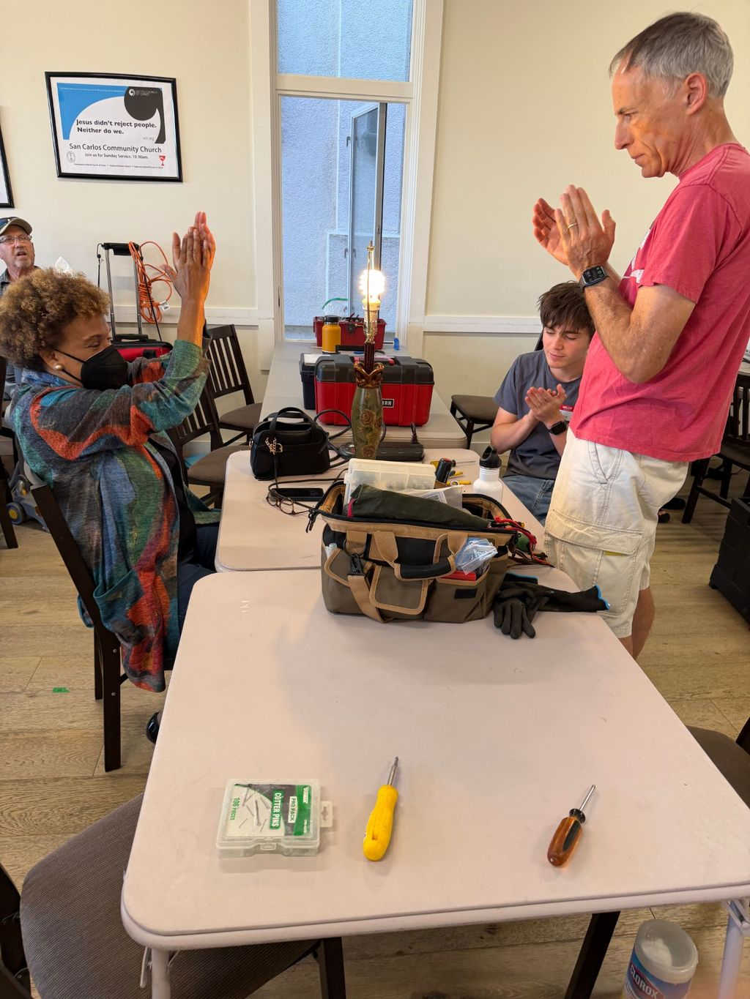
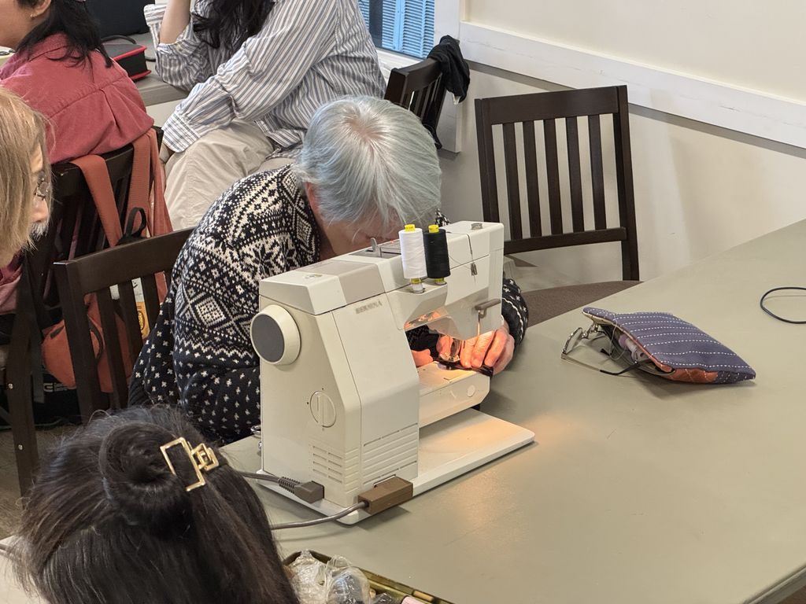

Who we are
About us.
We’re neighbors who know how to fix things, and neighbors who want to learn. Once a month we fill a community center with tools, volunteers and broken belongings, and get as many of them working again as we can.


Our mission
We keep useful things out of the landfill and bring neighbors together by hosting free community repair events on the San Francisco Peninsula, where people fix their broken belongings side by side with skilled volunteers and learn to repair things themselves.
What we do
Free repair events, run by volunteers.
The Repair Café idea started in Amsterdam in 2009, and there are now almost 4,000 Repair Cafés worldwide. We bring it to the Peninsula.
-
Monthly community repair events
Free, drop-in Repair Cafés held monthly on a Saturday, 3–6 PM, at the Callis & Elaine Community Center in San Carlos. Visitors bring small electronics and appliances, clothing and textiles, furniture, bicycles, toys, ceramics and jewelry. Check-in closes at 5:30 PM.
What we fix -
Hands-on repair coaching
It isn’t a drop-off service. A volunteer repair coach sits down with each visitor, works out what’s wrong with them, and guides them through the fix, so people leave knowing more about how their things work and how to keep them going.
How it works -
Volunteer program
Every event is staffed by volunteers: repair coaches for electronics, sewing, furniture, bikes and odds and ends, plus people who welcome visitors, keep the room running, take photos and spread the word. Some roles need no repair skills at all.
Volunteer roles -
Measuring what we keep in use
We record what comes through the door, how each repair turns out and how much weight we keep out of the landfill, and publish the results after every event.
Past events and results
Why we do it
Less waste, more neighbors who can fix things.
The Peninsula is a vibrant, diverse stretch of towns along the Bay and the coast. But like everywhere else, we throw too much away.
Build community
A welcoming space where people from all walks of life meet, connect and share skills. Repair Cafés are as much about human connection as they are about fixing things.
Reduce waste
The Bay Area sends millions of pounds of electronics and household goods to landfill every year. We want to keep as much of it as we can in use, one repair at a time.
Revive repair skills
We live in a throwaway culture. We connect experienced fixers with people eager to learn, and make repair feel approachable instead of intimidating.
Stay local & grassroots
We’re a small, community-run effort with no corporate backing and no red tape. Just people who believe in fixing things and helping their neighbors.
Serving Belmont, Burlingame, Daly City, Half Moon Bay, Menlo Park, Millbrae, Pacifica, Redwood City, San Bruno, San Carlos, San Mateo, South San Francisco and the surrounding areas.
Organization details
On the record.
Who we are, as registered.
- Legal name
- Repair Cafe of the Peninsula
- Tax status
- 501(c)(3) nonprofit. Donations are tax-deductible to the extent allowed by law.
- EIN
- 43-2309122
- Principal address
- 2108 N St, Ste N, Sacramento, CA 95816
- Area served
- The San Francisco Peninsula, San Mateo County, California
- Staffing
- Run entirely by volunteers

Come say hi
The best way to know us is to visit.
Bring something broken to our next event, or get in touch with a question.